All scripts are here (https://github.com/authorNari/crubybenci)
Benchmark options:
-r 5 -v --executables="r${rev}::./ruby -I./lib -I. -I.ext/common ./tool/runruby.rb --extout=.ext --"
uname -a : Linux hal 2.6.32-43-generic #97-Ubuntu SMP Wed Sep 5 16:43:09 UTC 2012 i686 GNU/Linux
Updated at : 2012-11-21 07:10:25+09:00
app_answer.plot
app_erb.plot
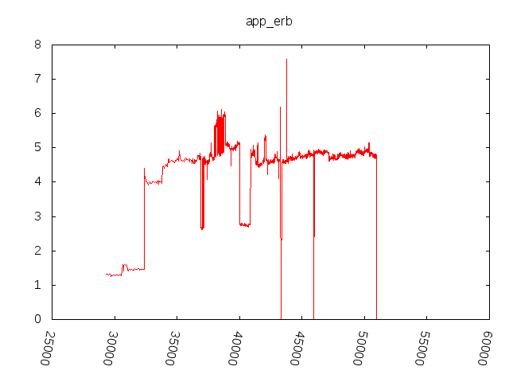
app_factorial.plot

app_fib.plot

app_mandelbrot.plot

app_pentomino.plot
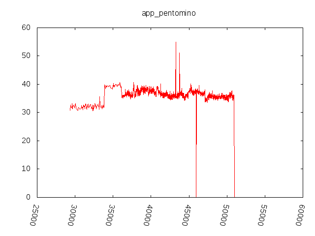
app_raise.plot

app_strconcat.plot

app_tak.plot

app_tarai.plot
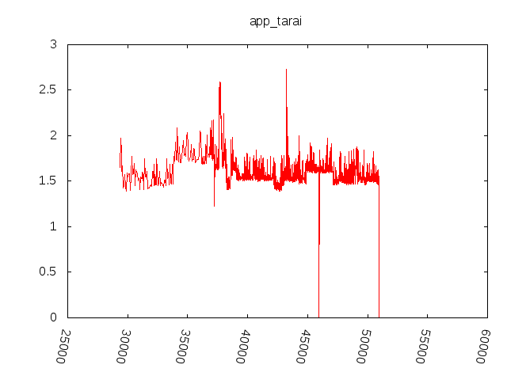
app_uri.plot
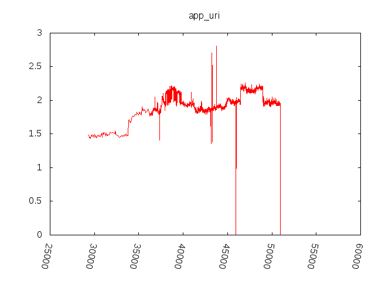
io_file_create.plot

io_file_read.plot

io_file_write.plot

io_select.plot
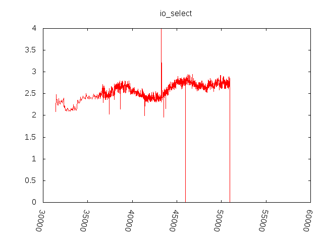
io_select2.plot

io_select3.plot

loop_for.plot

loop_generator.plot

loop_times.plot

loop_whileloop.plot

loop_whileloop2.plot
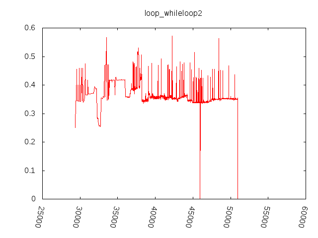
name.plot

so_ackermann.plot
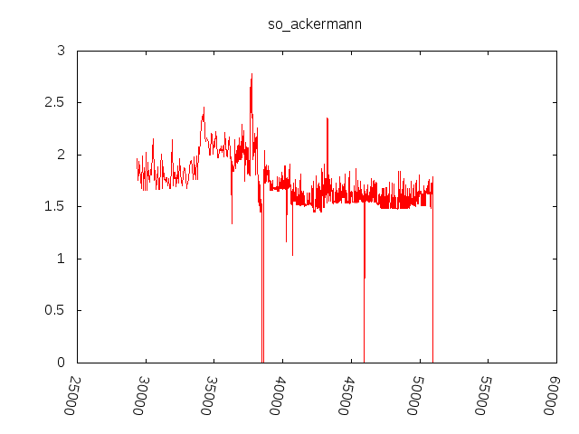
so_array.plot

so_binary_trees.plot
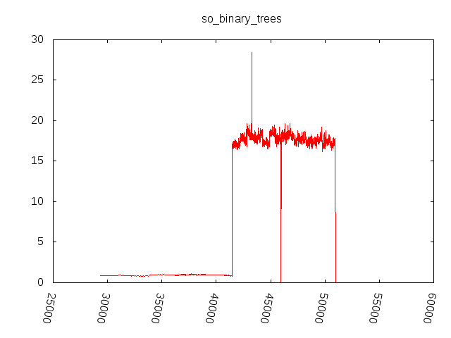
so_concatenate.plot

so_count_words.plot
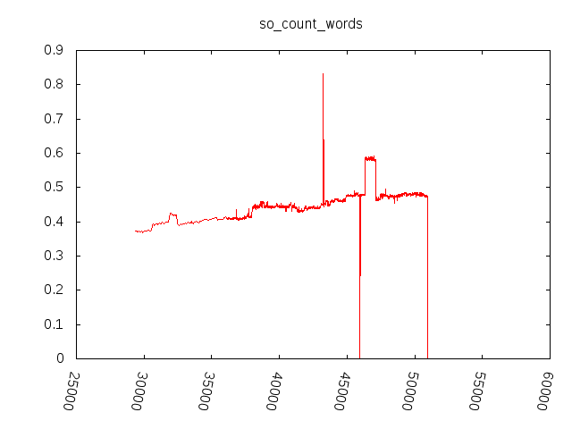
so_exception.plot

so_fannkuch.plot

so_fasta.plot

so_k_nucleotide.plot

so_lists.plot
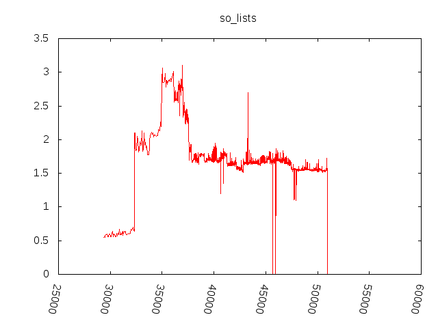
so_mandelbrot.plot

so_matrix.plot
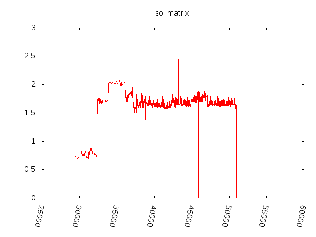
so_meteor_contest.plot
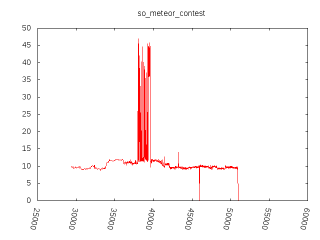
so_nbody.plot

so_nested_loop.plot
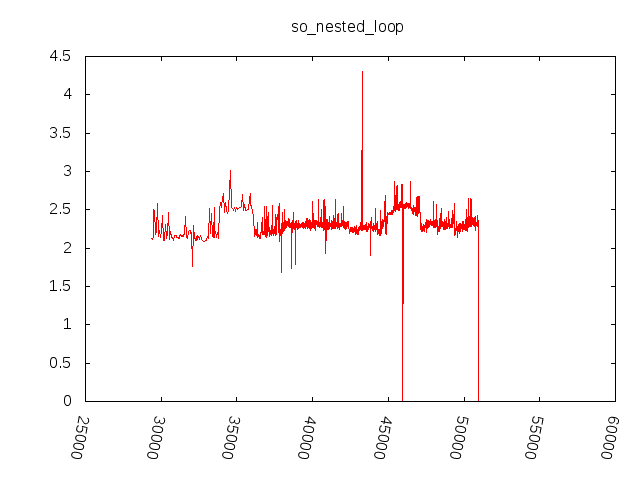
so_nsieve.plot

so_nsieve_bits.plot
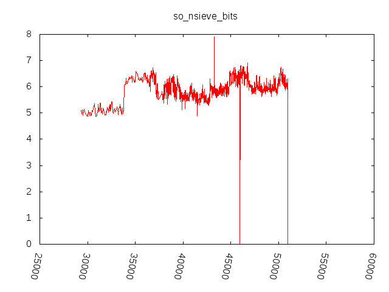
so_object.plot

so_partial_sums.plot
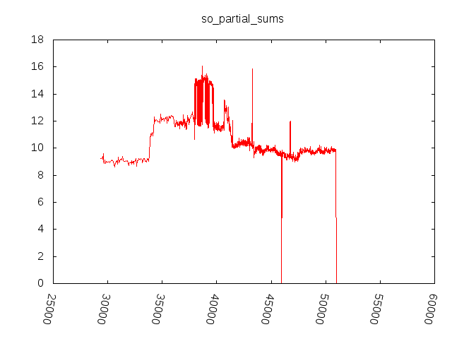
so_pidigits.plot

so_random.plot
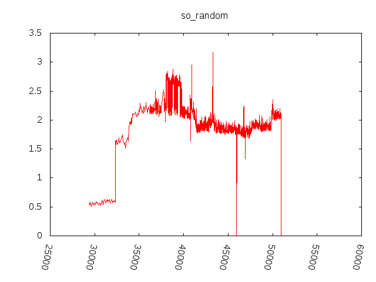
so_reverse_complement.plot
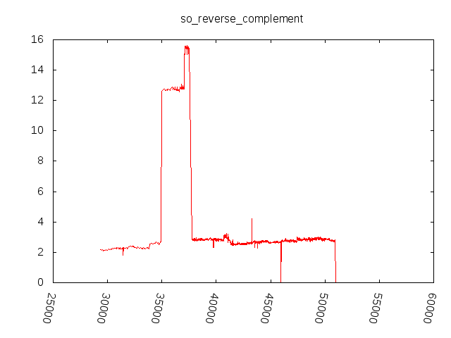
so_sieve.plot

so_spectralnorm.plot

vm1_attr_ivar*.plot

vm1_attr_ivar_set*.plot

vm1_block*.plot
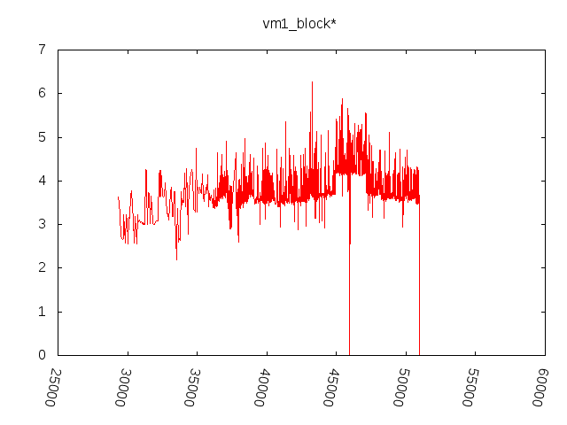
vm1_const*.plot
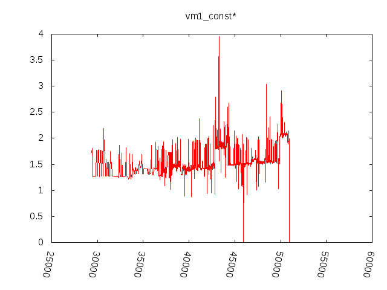
vm1_ensure*.plot

vm1_float_simple*.plot

vm1_ivar*.plot
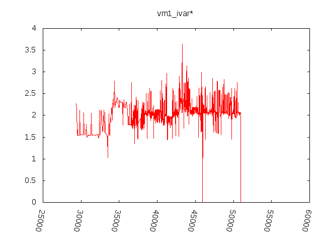
vm1_ivar_set*.plot
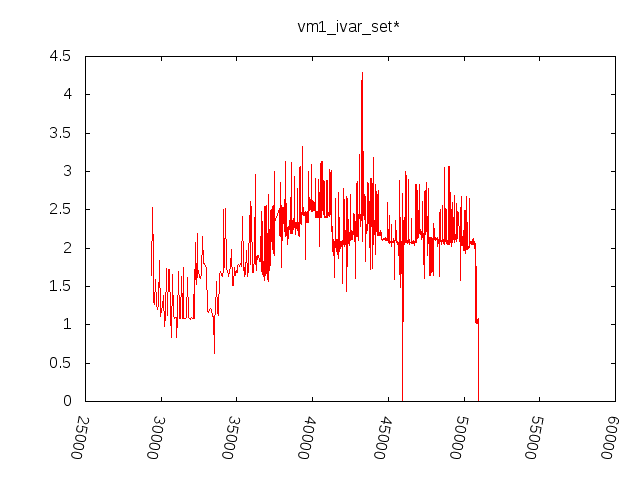
vm1_length*.plot

vm1_lvar_init*.plot

vm1_lvar_set*.plot

vm1_neq*.plot

vm1_not*.plot

vm1_rescue*.plot

vm1_simplereturn*.plot

vm1_swap*.plot

vm1_yield*.plot

vm2_array*.plot

vm2_bigarray*.plot
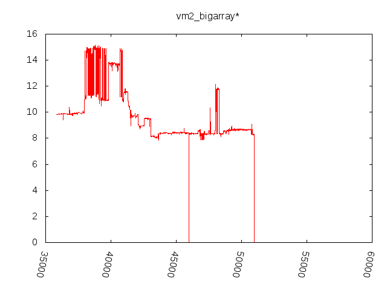
vm2_bighash*.plot

vm2_case*.plot

vm2_defined_method*.plot

vm2_dstr*.plot

vm2_eval*.plot
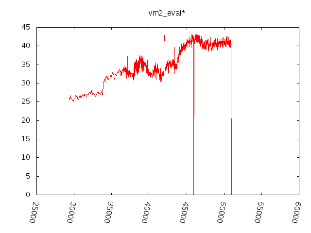
vm2_method*.plot

vm2_method_missing*.plot

vm2_method_with_block*.plot

vm2_mutex*.plot

vm2_poly_method*.plot
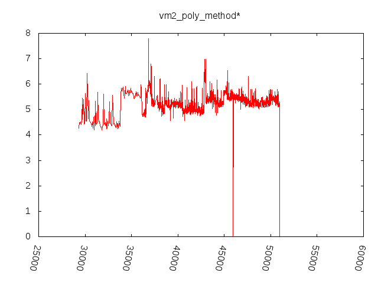
vm2_poly_method_ov*.plot

vm2_proc*.plot

vm2_raise1*.plot

vm2_raise2*.plot

vm2_regexp*.plot
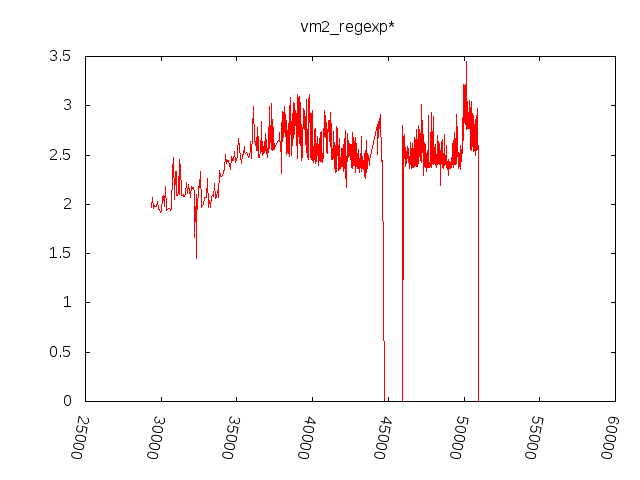
vm2_send*.plot
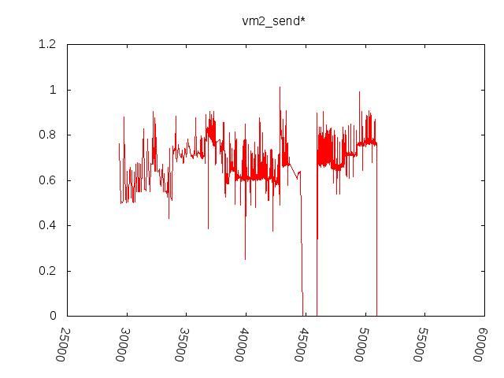
vm2_super*.plot
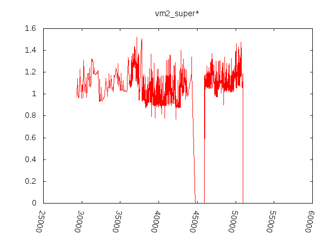
vm2_unif1*.plot

vm2_zsuper*.plot
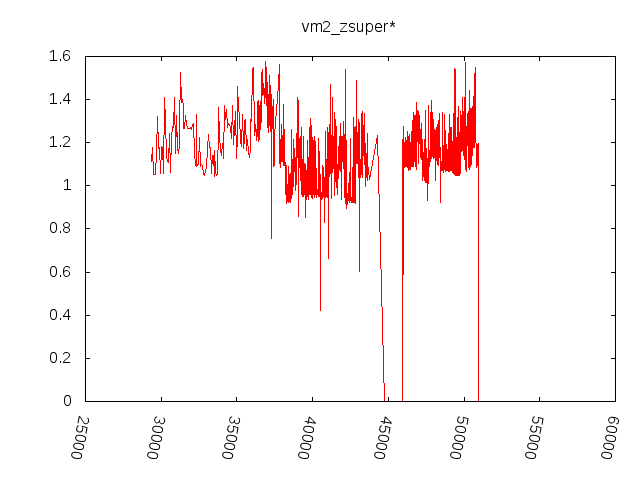
vm3_backtrace.plot

vm3_clearmethodcache.plot
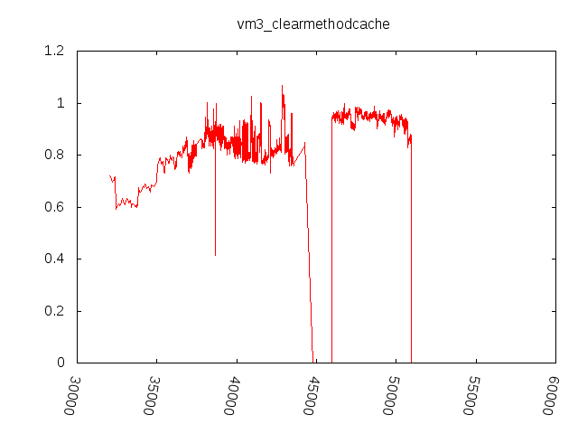
vm3_gc.plot

vm3_thread_create_join.plot

vm3_thread_mutex.plot

vm3_thread_mutex1.plot

vm3_thread_mutex2.plot

vm3_thread_mutex3.plot

vm4_thread_create_join.plot

vm4_thread_mutex1.plot

vm4_thread_mutex2.plot

vm4_thread_mutex3.plot

vm_thread_alive_check1.plot

vm_thread_create_join.plot

vm_thread_mutex1.plot

vm_thread_mutex2.plot

vm_thread_mutex3.plot

vm_thread_pass.plot

vm_thread_pass_flood.plot

vm_thread_pipe.plot